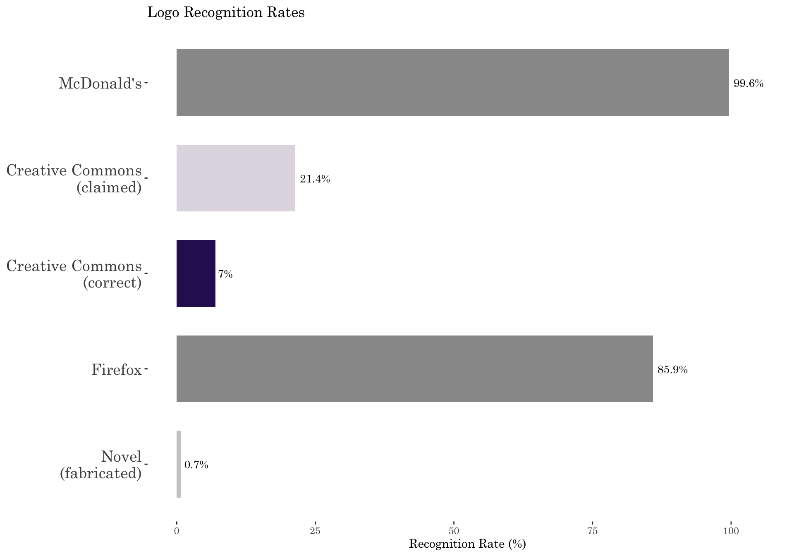
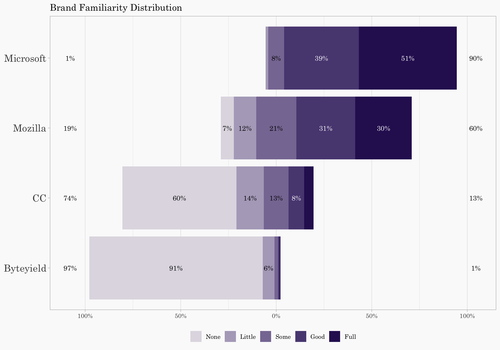
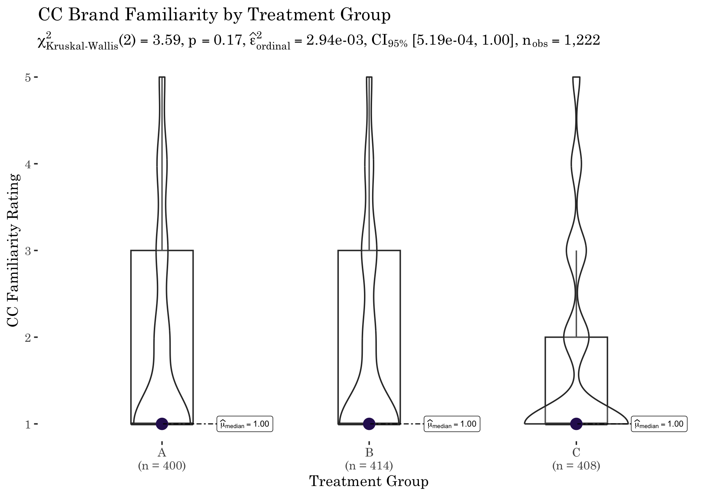

| Logo | Recognized (n) | Recognized (%) | Not Recognized (%) |
|---|---|---|---|
| McDonald’s | 1217 | 99.6 | 0.4 |
| Creative Commons | 262 | 21.4 | 78.6 |
| Firefox | 1050 | 85.9 | 14.1 |
| Novel (fabricated) | 8 | 0.7 | 99.3 |
6 Brand Recognition
6.1 Overview
Both the adoption of Creative Commons licensing and compliance with its terms depend on public recognition of the CC brand. This Chapter reports two complementary measures of CC brand awareness collected before respondents were exposed to any experimental treatment:
- a logo identification task, in which respondents viewed the CC logo alongside control logos and indicated whether they recognized each brand; and
- a brand familiarity battery, in which respondents rated their understanding of Creative Commons and three reference brands on a 1–5 Likert-type scale.
Together, these measures establish the baseline level of CC recognition in the sample. Because the brand questions preceded treatment exposure, they capture pre-existing awareness rather than any effect of the experimental manipulation. The results have direct implications for interpreting the scenario analyses in Chapter 7: if most respondents are unfamiliar with Creative Commons at baseline, then observed differences in infringement perceptions between treatment groups reflect the information provided in the experimental vignettes rather than prior knowledge.
Note
Scope and Sample. This Chapter reports data from Groups A, B, and C (n = 1222). The B1 Educational Use supplement is excluded because B1 participants did not complete the brand recognition battery. See Codebook §2.1.3 for B1 details.
The Chapter covers both logo recognition (RQ 1.1: Can respondents identify the CC logo?) and brand familiarity (RQ 1.2: How familiar are respondents with Creative Commons as a brand?). See Codebook, Brand Recognition for variable definitions (IDCC, IDCC-CAT, CCREC, BRANDSKILLS_1–4).
6.2 Survey Instrument Design
The brand familiarity battery was adapted from Hargittai and Hsieh’s (2012) internet skills measure, which embeds target items among reference items to reduce strategic response inflation.1 Rather than asking about Creative Commons in isolation, which could prime respondents to overstate their familiarity, the instrument presents four brands in random order within a single matrix question:
1 Eszter Hargittai & Yuli Patrick Hsieh, Succinct Survey Measures of Web-Use Skills, 30 Soc. Sci. Computer Rev. 95 (2012).
| Brand | Role in Design |
|---|---|
| Creative Commons | Brand of interest |
| Byteyield | Fabricated brand (attention check) |
| Microsoft | High-recognition ceiling reference |
| Mozilla | Moderate-recognition comparison |
Byteyield is a fabricated brand created for this study. Its name was generated to sound plausible as a technology company and verified through Google search and USPTO TESS trademark search to confirm that no real brand existed under that name. A respondent who reports familiarity with Byteyield is likely responding inattentively or strategically inflating their claimed knowledge.2
2 See Jesse Chandler & Gabriele Paolacci. “Lie for a Dime: When Most Prescreening Responses Are Honest but Most Study Participants Are Impostors.” 8 Soc. Psychological & Personality Sci. 500 (2017); Katelyn Sharpe Wessling, Joel Huber, & Oded Netzer. “MTurk Character Misrepresentation: Assessment and Solutions.” 44 J. Cons. Res. 211 (2017).
Microsoft and Mozilla serve as anchoring references: Microsoft provides a near-universal recognition ceiling, while Mozilla (the organization behind Firefox) occupies a middle ground because it is well-known among technology users but less universally recognized than Microsoft. Together, these anchors establish a credibility spectrum against which CC familiarity can be meaningfully interpreted. See Codebook, BRANDSKILLS for scale definitions and §2.6 for the 1–5 response scale (None / Little / Some / Good / Full).
6.3 Logo Recognition
Before the brand familiarity battery, respondents completed a logo identification task. Four logos were displayed in random order and respondents answered: “Do you know the brand associated with this logo?” (Yes / No). Including multiple logos, such as the McDonald’s golden arches as a near-universal reference and a novel fabricated logo as a floor control, reduced the likelihood that respondents would strategically inflate their claimed recognition of any single logo.
Respondents who answered “Yes” for the Creative Commons logo were then prompted with a free-text entry: “Please identify the brand you associate with this logo.” These responses were hand-coded into six categories. See Codebook, IDCC-CAT for the categorization scheme.
Among the 262 respondents who claimed to recognize the Creative Commons logo, free-text identification responses were coded into six categories:
| Identification | n | % |
|---|---|---|
| Creative Commons (correct) | 85 | 32.6 |
| Closed Captioning | 84 | 32.2 |
| Comedy Central | 43 | 16.5 |
| Chanel | 24 | 9.2 |
| Copyright | 16 | 6.1 |
| Other | 9 | 3.4 |

Note
Logo Recognition Interpretation. McDonald’s, as expected, achieved near-ceiling recognition (99.6%), confirming that respondents understood the task and were attending to the logos. The fabricated novel logo serves as a floor control; its recognition rate (0.7%) captures the base rate of false positive claims.
For Creative Commons, 21.4% of respondents claimed to recognize the logo, but only 7% correctly identified it as Creative Commons — meaning roughly 68% of claimants were mistaken. The most common misidentification was Closed Captioning, reflecting the visual similarity of the “CC” letterform. Other misidentifications included Comedy Central, Chanel, and generic copyright associations. See Codebook, IDCC-CAT for the full categorization scheme.
Key Takeaway: True CC logo recognition is very low (7%), even lower than brand name familiarity (26% rated “Some” understanding or better on the BRANDSKILLS scale).
6.4 Brands Tested
Respondents rated their familiarity with four brands on a 1–5 Likert-type scale (1 = None, 5 = Full understanding). The four brands serve distinct roles in the experimental design:
| Brand | Variable | Role |
|---|---|---|
| Creative Commons | BRANDSKILLS_1 |
Brand of interest |
| Byteyield | BRANDSKILLS_2 |
Fabricated brand (attention check) |
| Microsoft | BRANDSKILLS_3 |
High-recognition ceiling |
| Mozilla | BRANDSKILLS_4 |
Moderate-recognition comparison |
6.4.1 How to Read the Likert Plot
The Likert plot below is a diverging stacked bar chart centered at the scale midpoint. Each bar represents one brand, and the colored segments show the proportion of respondents at each familiarity level:
- Left of center = lower familiarity (None, Little) — bars extending leftward indicate less recognition
- Right of center = higher familiarity (Good, Full) — bars extending rightward indicate greater recognition
- Bar width reflects the proportion of respondents at each level
Quick Interpretation: A brand with bars mostly extending to the right is well-known; a brand with bars mostly extending to the left is unfamiliar to most respondents. The relative positions reveal the expected ordering: Microsoft dominates the right side, Byteyield (fabricated) dominates the left, and Creative Commons and Mozilla fall between these anchors.
6.5 Brand Familiarity Analysis
6.5.1 Familiarity Plot

The plot confirms the expected brand recognition ordering. Microsoft anchors the high end, with the vast majority of respondents rating their familiarity at “Good” or “Full” (mean = 4.40, High). Mozilla occupies the middle — recognizable to most respondents but with more spread across the familiarity scale (mean = 3.65, Moderate). Creative Commons clusters heavily on the left side of the chart: 59.6% of respondents reported no familiarity whatsoever, and only 26% rated their understanding at “Some” or better (mean = 1.84, Very Low). Byteyield, the fabricated brand, anchors the lowest end (mean = 1.14, Very Low), confirming that respondents were not indiscriminately inflating their claimed knowledge.
6.5.2 Summary Statistics
| Brand | Mean | SD | Median | Min | Max | Recognition_Level | |
|---|---|---|---|---|---|---|---|
| BRANDSKILLS_1 | Creative Commons | 1.84 | 1.21 | 1 | 1 | 5 | Very Low |
| BRANDSKILLS_2 | Byteyield | 1.14 | 0.50 | 1 | 1 | 5 | Very Low |
| BRANDSKILLS_3 | Microsoft | 4.40 | 0.70 | 5 | 2 | 5 | High |
| BRANDSKILLS_4 | Mozilla | 3.65 | 1.21 | 4 | 1 | 5 | Moderate |
The CC familiarity distribution is heavily left-skewed, with a median of 1 and a mean of 1.84. Most members of the general public have little to no familiarity with Creative Commons licensing. For the experimental design, this low baseline means that most respondents encounter the CC license markings for the first time during the treatment vignettes, strengthening the interpretation that between-group differences in the scenario analyses reflect the treatment information rather than prior knowledge.
6.6 Attention Check
The fabricated brand Byteyield provides an embedded attention check. Because no real brand exists under this name, any reported familiarity beyond the floor suggests either inattentive responding or strategic overclaiming. A meaningful gap between CC familiarity and Byteyield familiarity provides evidence that respondents’ CC familiarity ratings reflect genuine self-assessment rather than random or inflated responses.
✓ Attention check passed: fabricated brand (Byteyield) has appropriately low recognition.The CC–Byteyield gap in mean familiarity is 0.71 points (CC mean = 1.84 vs. Byteyield mean = 1.14). This gap confirms that the modest CC familiarity observed above reflects genuine variation in brand awareness, not response noise. Respondents can and do distinguish between brands they have some awareness of and brands they have never encountered.
6.7 CC Familiarity by Group
If randomization succeeded, CC familiarity should not differ systematically across the three treatment groups. The brand familiarity question precedes treatment exposure in the survey flow, so any between-group difference would indicate a pre-treatment confound — a threat to internal validity independent of the demographic balance confirmed in Chapter 4. This test parallels the covariate balance logic applied to demographics: just as age, income, and education should be balanced across groups, so too should pre-existing brand awareness.

Note
CC familiarity by group interpretation. Kruskal-Wallis p = 0.166. The three treatment groups do not differ significantly in pre-existing CC familiarity, confirming that brand awareness is balanced across conditions. This result, combined with the demographic balance confirmed in Chapter 4, supports a causal interpretation of between-group differences in the scenario analyses.
6.8 Summary
TipKey Findings — Brand Recognition
CC familiarity is low. 59.6% of respondents reported no familiarity with Creative Commons (BRANDSKILLS_1 = 1, “None”), and only 26% rated their understanding at “Some” or better (mean = 1.84, recognition level: Very Low).
Logo recognition confirms low awareness. Only 7% of respondents correctly identified the Creative Commons logo — roughly 68% of those who claimed to recognize it were mistaken. Common misidentifications (Closed Captioning, Comedy Central, Chanel) reveal the visual ambiguity of the “CC” mark. True logo recognition is even lower than self-reported brand name familiarity.
The fabricated brand test passes. Byteyield, the fabricated attention check brand, shows appropriately low familiarity (mean = 1.14, Very Low). The CC–Byteyield gap of 0.71 points confirms that respondents’ CC familiarity ratings reflect genuine self-assessment rather than random or inflated responses.
Microsoft anchors the ceiling; Mozilla occupies the middle. Microsoft achieves near-universal recognition (mean = 4.40, High), while Mozilla occupies a credible middle position (mean = 3.65, Moderate). These reference points confirm that the 1–5 scale discriminates meaningfully across the recognition spectrum.
CC familiarity is balanced across treatment groups. Kruskal-Wallis p = 0.166, confirming that pre-existing CC awareness does not differ significantly across Groups A, B, and C. Combined with Chapter 4’s demographic balance results, this supports a causal interpretation of between-group differences in the scenario analyses.
Implications for the scenario analyses. The low baseline means that most respondents encounter the CC license notice for the first time during the experimental vignettes. Treatment effects therefore operate on a largely uninformed population — a condition that strengthens the ecological validity of the study (most real-world encounters with CC-licensed content likely involve users with little prior CC knowledge) but also means the results reflect first impressions rather than informed judgments.